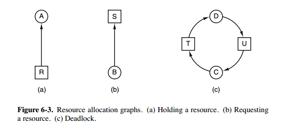
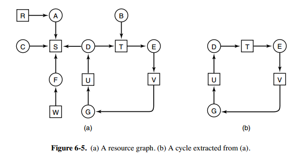
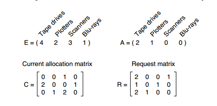
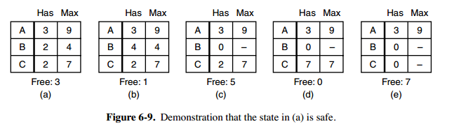
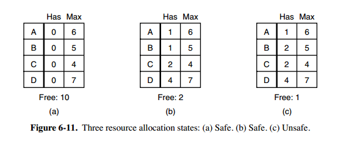
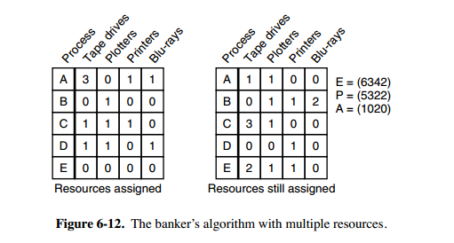

3.1 必要条件

- 互斥：每个资源要么已经分配给了一个进程，要么就是可用的。
- 占有和等待：已经得到了某个资源的进程可以再请求新的资源。
- 不可抢占：已经分配给一个进程的资源不能强制性地被抢占，它只能被占有它的进程显式地释放。
- 环路等待：有两个或者两个以上的进程组成一条环路，该环路中的每个进程都在等待下一个进程所占有的资源。
3.2 处理方法
a 鸵鸟策略
- 把头埋在沙子里，假装根本没发生问题。
- 因为解决死锁问题的代价很高，因此鸵鸟策略这种不采取任务措施的方案会获得更高的性能。
- 当发生死锁时不会对用户造成多大影响，或发生死锁的概率很低，可以采用鸵鸟策略。
- 大多数操作系统，包括 Unix，Linux 和 Windows，处理死锁问题的办法仅仅是忽略它。
b 死锁检测与死锁恢复
- 不试图阻止死锁，而是当检测到死锁发生时，采取措施进行恢复。
1.每种类型一个资源的死锁检测

- 上图为资源分配图，其中方框表示资源，圆圈表示进程。资源指向进程表示该资源已经分配给该进程，进程指向资源表示进程请求获取该资源。
- 图 a 可以抽取出环，如图 b，它满足了环路等待条件，因此会发生死锁。
- 每种类型一个资源的死锁检测算法是通过检测有向图是否存在环来实现，从一个节点出发进行深度优先搜索，对访问过的节点进行标记，如果访问了已经标记的节点，就表示有向图存在环，也就是检测到死锁的发生。
2.每种类型多个资源的死锁检测

- 上图中，有三个进程四个资源，每个数据代表的含义如下：
- E 向量：资源总量
- A 向量：资源剩余量
- C 矩阵：每个进程所拥有的资源数量，每一行都代表一个进程拥有资源的数量
- R 矩阵：每个进程请求的资源数量
- 进程 P1 和 P2 所请求的资源都得不到满足，只有进程 P3 可以，让 P3 执行，之后释放 P3 拥有的资源，此时 A = (2 2 2 0)。P2 可以执行，执行后释放 P2 拥有的资源，A = (4 2 2 1) 。P1 也可以执行。所有进程都可以顺利执行，没有死锁。
- 算法总结如下：每个进程最开始时都不被标记，执行过程有可能被标记。当算法结束时，任何没有被标记的进程都是死锁进程。
- 寻找一个没有标记的进程 Pi，它所请求的资源小于等于 A。
- 如果找到了这样一个进程，那么将 C 矩阵的第 i 行向量加到 A 中，标记该进程，并转回 1。
- 如果没有这样一个进程，算法终止。
3.死锁恢复
- 利用抢占恢复
- 利用回滚恢复
- 通过杀死进程恢复
3.3 死锁预防
破坏四大条件之一，在程序运行之前预防发生死锁。
1.破坏互斥条件
- 例如假脱机打印机技术允许若干个进程同时输出，唯一真正请求物理打印机的进程是打印机守护进程。
2.破坏占有和等待条件
- 一种实现方式是规定所有进程在开始执行前请求所需要的全部资源。
3. 破坏不可抢占条件
4.破坏环路等待
- 给资源统一编号，进程只能按编号顺序来请求资源。
3.4 死锁避免
在程序运行时避免发生死锁。
a 安全状态
- 图 a 的第二列 Has 表示已拥有的资源数，第三列 Max 表示总共需要的资源数，Free 表示还有可以使用的资源数。从图 a 开始出发，先让 B 拥有所需的所有资源（图 b），运行结束后释放 B，此时 Free 变为 5（图 c）；接着以同样的方式运行 C 和 A，使得所有进程都能成功运行，因此可以称图 a 所示的状态时安全的。

- 定义：如果没有死锁发生，并且即使所有进程突然请求对资源的最大需求，也仍然存在某种调度次序能够使得每一个进程运行完毕，则称该状态是安全的。
- 安全状态的检测与死锁的检测类似，因为安全状态必须要求不能发生死锁。下面的银行家算法与死锁检测算法非常类似，可以结合着做参考对比。
b 单个资源的银行家算法
- 一个小城镇的银行家，他向一群客户分别承诺了一定的贷款额度，算法要做的是判断对请求的满足是否会进入不安全状态，如果是，就拒绝请求；否则予以分配。

- 上图 c 为不安全状态，因此算法会拒绝之前的请求，从而避免进入图 c 中的状态。
c 多个资源的银行家算法
- 图中有五个进程，四个资源。左边的图表示已经分配的资源，右边的图表示还需要分配的资源。最右边的 E、P 以及 A 分别表示：总资源、已分配资源以及可用资源，注意这三个为向量，而不是具体数值，例如 A=(1020)，表示 4 个资源分别还剩下 1/0/2/0。

- 检查一个状态是否安全的算法如下：
- 查找右边的矩阵是否存在一行小于等于向量 A。如果不存在这样的行，那么系统将会发生死锁，状态是不安全的。
- 假若找到这样一行，将该进程标记为终止，并将其已分配资源加到 A 中。
- 重复以上两步，直到所有进程都标记为终止，则状态时安全的。
- 如果一个状态不是安全的，需要拒绝进入这个状态。
本文由 LancerStadium
创作，采用 知识共享署名4.0 国际许可协议进行许可
本站文章除注明转载/出处外，均为本站原创或翻译，转载前请务必署名
最后编辑时间为: 2023-02-19T08:43:39+08:00